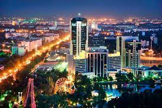
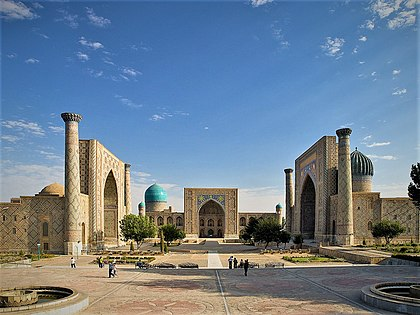

Toshkent — Oʻzbekiston Respublikasining poytaxti va eng yirik shahardir, shuningdek, aholisi boʻyicha Markaziy Osiyodagi eng yirik qadimiy shaharlardan biridir. U Oʻzbekistonning shimoli-sharqiy qismida, Qozogʻiston bilan chegaraga yaqin hududda joylashgan boʻlib, maydoni 334,8 km2 (129.3 2)ni tashkil etadi. 2021-yilgi maʼlumotlarga koʻra, Toshkent aholisi 2 694 400 nafarni yoki Oʻzbekiston aholisining qariyb 8% ini tashkil etadi[1]. 2018-yil ma'lumotlariga koʻra, Toshkent shahrining YIM 2,74 milliardni tashkil etadi va bu koʻrsatkich bilan u Oʻzbekistondagi eng katta YIMga ega shahar boʻlib kelmoqda[4][5].
Samarqand — Oʻzbekiston Respublikasi Samarqand viloyatidagi qadimiy shahar. Viloyatning maʼmuriy, iqtisodiy va madaniy markazi (1938-yildan). 1925—30 yillarda Respublika poytaxti. Oʻzbekistonning janubi-gʻarbida, Zarafshon vodiysining markaziy qismida (Dargʻom va Siyob kanallari orasida) joylashgan. Oʻrtacha 695 m balandlikda. Toshkentdan 300 km. Samarqanddan Toshkent—Dushanbe, Toshkent—Turkmanboshi, Toshkent—Uchquduq—Qo'ngʻirot temir yoʻllari, Katta Oʻzbek trakti (Toshkent—Termiz yo'li) oʻtadi.
